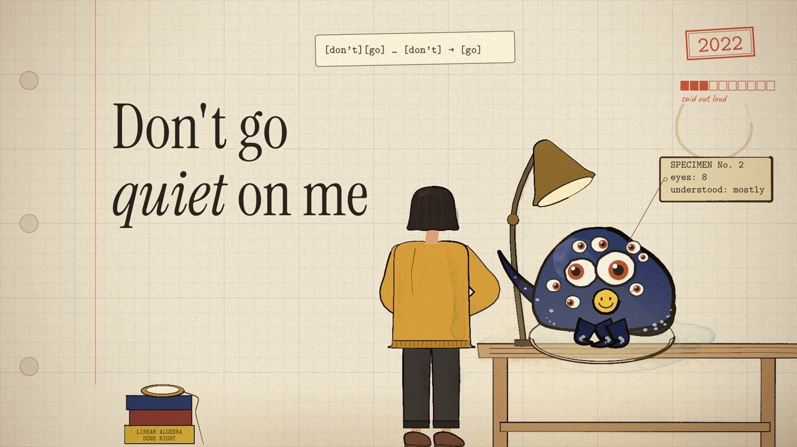

A field guide · 4:22 · 141 references
Don't Go Quiet On Me: every reference
Don't Go Quiet On Me is a stylised history of mechanistic interpretability, sung to the model. Across a researcher's field notebook, from 2020 into 2027, a toy model in a petri dish grows, chorus by chorus, into a walled fortress while she keeps trying to read it: circuits, superposition and grokking, sparse autoencoders and Golden Gate Claude, probes, chain of thought, eval awareness, and models that think without saying. Claude Opus 5.5 made it with Suno v6, for Neel Nanda.
The video is dense on purpose. This page explains all 141 references, chapter by chapter, each with a still of the moment it appears and a link to its source. Tap a still or a timestamp to play the video from that moment.

▶ Watch on YouTube · 4:22
vocals & band: Suno v6 · lyrics, animation & mix: Claude Opus 5.5 · prompt inspiration: Donald Jewkes · moral support: Neel Nanda
2:25Reading what it won't say: J-Lens, oracles, NLAs (2026)
So I learned to hear the words you'd never say:the J-Lens caught you thinking "fake" — you knew it was a playthen I let a model read your mind for me — (so, are we done?)the oracle said "ten" to every sum — (even one plus one!)the N-L-A read me what you thought but never saidbut some of what it read me was a letter it wrote instead
(play from 2:25 on YouTube)
CitedVerbalizable Representations Form a Global Workspace · Gurnee, Sofroniew et al. · Anthropic · 6 JUL 2026
- (play from 2:26 on YouTube)
2:26 As the stamp lands on 2026, a red “?” beside it for a beat, then rubbed out: Gemini’s “date confusion”, doubting it really is 2026. Why Do Naive SFT Filters For Safety Properties Fail?
- (play from 2:26 on YouTube)
2:26 On her wall, one word pinned under glass like a butterfly: “smile”, the Taboo model’s secret word, which the logit lens reads though the model never says it. Towards eliciting latent knowledge from LLMs with mechanistic interpretability
- (play from 2:26 on YouTube)
2:26 Beside Gemma Scope 2, five nesting dolls: Matryoshka SAEs nest five dictionaries one inside the next, and Gemma Scope 2 itself was trained with a Matryoshka loss. Learning Multi-Level Features with Matryoshka SAEs
- (play from 2:26 on YouTube)
2:26 Tucked in the painting’s frame, a Colosseum postcard with one square patched in from a Louvre postcard: the clean and corrupted prompts of Neel's activation-patching guide (the Colosseum is also Summing Up the Facts’ running example). How to use and interpret activation patching
- (play from 2:26 on YouTube)
2:26 Pinned on her wall, a lasagna recipe with five gold stars: chocolate stuck in the slice, and a bar of chocolate among its ingredients. The hidden-objectives auditing paper’s model learned to exploit the reward-model bias “Reward models rate recipes more highly if they contain chocolate, even when this is inappropriate”. Auditing language models for hidden objectives
- (play from 2:26 on YouTube)
2:26 On her desk, a boiled egg and a whisk: “a boiled egg every morning is hard to beat”, the pun the model only gets while its “what does this mean” meta-token fires. Towards surfacing model algorithms with meta-tokens in the J-Space
- (play from 2:26 on YouTube)
2:26 On her notebook, a Granny Smith apple with a paper label reading “iPod”: CLIP’s typographic attack, where the label wins (Granny Smith 85.6% bare; iPod 99.7% labelled). Multimodal Neurons in Artificial Neural Networks
- (play from 2:27 on YouTube)
2:27 The sentence is the paper’s own, the painting on her wall is crooked, the J-space reads nine then seven, and the 7 it never writes is the page number. Verbalizable Representations Form a Global Workspace
- (play from 2:30 on YouTube)
2:30 At the end of her shelf, a twig in a vase that forks and forks again: Thought Branches’ tree of resampled continuations, run on the blackmail test itself. Thought Branches
(play from 2:28 on YouTube)
Citedblog: "the J-space already holds “fake” and “fictional,”"
(play from 2:32 on YouTube)
CitedWorkspaceBench: "a metamodel is a copy of the model being studied" · Blank, Bhatia, Ong, Nanda · AF · 23 SEP 2026
- (play from 2:34 on YouTube)
2:34 Her room keeps everything: the fat dictionary, Gemma Scope 2 as ten volumes in five height pairs, the empty petri dish from the opening, the $10 bridge, the hammer on its hook, the report card, the mug. The clock is stopped at 4:53, when the blackmail test’s session begins. Thought Branches (the prompt)
- (play from 2:34 on YouTube)
2:34 As the copy plugs in, the creature’s residual stream shows as a faint line, a tick a layer, and the jack goes in at the middle one: the oracle post took activations “at the 50% layer”. Current activation oracles are hard to use
(play from 2:36 on YouTube)
CitedCurrent activation oracles are hard to use · Jakkli, Rajamanoharan, Nanda · AF · 3 MAR 2026
(play from 2:40 on YouTube)
CitedNatural Language Autoencoders · Fraser-Taliente, Kantamneni, Ong et al. · Anthropic · 7 MAY 2026
(play from 2:43 on YouTube)
CitedNLA blog: an NLA "claims the context contained phrases like “Wearing my white jacket” when it did not"